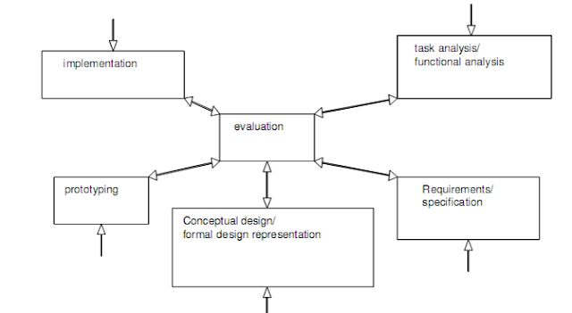

Model Life Cycle Software
Apa itu Life Cycle Software ?
Life Cycle Software merupakan suatu proses desain atas program yang akan dibangun untuk mendapatkan hasil workable.
Model Pada Life Cycle Software
- Model Waterfall
- Requirements analysis
- Design
- Implementation
- Testing
- Deployment and Maintenance
- V-Model
- Fase Desain
- Fase Implementasi
- Fase Validasi
- Struktur yang jelas: model ini menawarkan struktur yang terdefinisi dengan baik dengan kalimat yang jelas, sehingga lebih mudah untuk merencanakan dan mengatur proyek.
- Manajemen persyaratan: fase pertama adalah pengumpulan persyaratan, sehingga dengan jelas mendefinisikan kebutuhan proyek (mengurangi risiko modifikasi yang terus-menerus).
- Dokumentasi yang menyeluruh: mencakup dokumentasi yang terperinci di setiap tahap, sehingga memudahkan pemeliharaan dan pemahaman fungsionalitas sistem selanjutnya.
- Pengurangan risiko: menekankan pada pengujian di seluruh proses, sehingga masalah dapat diidentifikasi dan diperbaiki lebih awal.
- Kurangnya fleksibilitas: kurang cocok untuk proyek yang sering mengalami perubahan atau ketika melakukan penyesuaian yang cepat.
- Waktu pengembangan yang lama: membutuhkan waktu untuk menyelesaikan proyek dibandingkan dengan metode yang lebih berulang dan fleksibel.
- Keterlibatan pelanggan yang tidak dapat diandalkan: partisipasi dan umpan balik pelanggan sering kali diminta terutama selama fase validasi, yang dapat membatasi tindakan.
- Fase Desain
- Analisis Persyaratan
- Mengumpulkan informasi dari para pemangku kepentingan
- Mendefinisikan kasus penggunaan.
- Memperjelas fungsionalitas yang diharapkan.
- Menganalisis kendala teknis.
- Mengidentifikasi kriteria keberhasilan proyek.
- Merinci persyaratan kinerja.
- Desain Awal
- Desain Terperinci
- Definisi algoritma yang tepat.
- Struktur data.
- Antarmuka internal dan eksternal.
- Interaksi antara modul yang berbeda.
- Fase Implementasi
- Pengkodean
- Pengujian Unit
- Integrasi
- Fase Validasi
- Tes Validasi
- kasus penggunaan nyata,
- skenario utama.
- Situasi yang akan dihadapi perangkat lunak saat digunakan dalam kondisi nyata.
- Verifikasi Kepatuhan
- Keamanan.
- Kinerja.
- Keterjangkauan.
- Kegunaan
- Penerimaan Pelanggan
- Tes Penerimaan.
- Demonstrasi.
- Tinjauan perangkat lunak yang mendalam.
- Simple Interaction Design Model
- Identify needs/Establish requirement : pada tahap ini, kita menerima masukkan dari satu titik, lalu di identifikasi apa saja kebutuhannya dan apakah sesuai dengan kebutuhannya. Sebelum menetapkan Establish requirement ada beberapa hal yang harus dipahami yaitu siapa penggunanya, dan apa tujuan yang mereka inginkan ketika menggunakan software yang akan rancang/dikembangkan ini.
- Design/(Re) Design: pada tahap ini dilakukan desain dan alternatif desain software dari kebutuhan yang diperlukan dan sesuai dengan persyaratan yang ditetapkan (dapat dengan meilhat desain orang lain sebagai referensi yang berguna). sedangkan Redesign adalah melakukan desain ulang dikarenakan hasil sebelumnya tidak sesuai dengan kebutuhan atau tidak sesuai dengan hasil evaluasi akhir.
- Build interactive versions: tahapan ini membuat sebuah prototype desain interaktif yang mana dapat memiliki fungsi terbatas. Sehingga penggembang dapat berkomunikasi dengan pengguna dengan mengujicobakannya. Jika terdapat design yang memiliki kesalahan/kekurangan/belum ada maka proses akan kembali ketahapan Redesign.
- Evaluate: tahapan ini, tahapan dimana pengguna mengevaluasi terhadap software yang telah di buat. Jika terdapat kekeliruan dari segi design maka tahapan akan kembali kepada tahap Redesign. Jika kesalahan terjadi karena kesalahan identifikasi kebutuhan maka akan kembali ketahapan Identify needs/Establish requirements. Jika telah sesuai kebutuhan pengguna maka ini akan menjadi final project.
- Melibatkan pengguna pada proses design dan evaluation.
- Tentukan kriteria dari quantifiable & measurable usability.
- Akan terjadinya iterasi yang tidak dapat di hindari.
- Star Lifecycle Model (Hartson & Hix, 1989)
- Task analysis/Functional analysis: tahapan ini, akan melakukan functional analysis dari input yang di berikan yang kemudian akan dilakukan evaluation.
- Requrements/Specification : tahapan ini, akan mengumpulkan informasi terkait dengan kebutuhan dan segala sesuatu yang bersangkutan dengan software yang akan dikembangkan, lalu dilakukan tahapan evaluation.
- Conceptual design/Formal design representation :tahapan ini akan mendesain sebuah desain konseptual dari software yang akan dikembangkan bersadarkan semua inputan yang masuk ketahapan ini. Kemudian dilakukan tahapan evaluation.
- Prototyping: Sama halnya seperti tahapan pada Simple interaction design model. dimana prototype merupakan desain interaktif yang memiliki fungsi terbatas yang akan di ujicobakan kepada pengguna lalu melakukan tahap evaluation.
- Implementation: tahapan ini merupakan tahapan dimana software diimplementasikan dan digunakan oleh pengguna lalu dilakukannya tahap evaluation.
- Evaluation: tahapan ini adalah melakukan evaluasi terhadap setiap tahapan yang menggunakan tahapan ini untuk melihat apakah hal yang dilakukan pada tahapan sebelumnya telah sesuai dengan kebutuhan terbaru dari pengguna lalu memberikan feedback terhadap tahapan sebelumnya.

Apa Itu Metode Waterfall ?
Sebagai salah satu metode software development, Waterfall juga dikenal sebagai Software Development Life Cycle (SDLC) di mana merupakan salah satu metode pengembangan perangkat lunak yang mengikuti pola aliran, seperti air terjun. Dalam metode ini, setiap tahapan pengembangan dilakukan secara berurutan, mengalir dari atas ke bawah.
Metode Waterfall adalah pendekatan awal dalam SDLC yang digunakan dalam pengembangan perangkat lunak. Adapun metode ini pertama kali diperkenalkan di Symposium on Advanced Programming Method for Digital Computers pada tanggal 29 Juni 1956 oleh Herbert D. Benington. Perkenalan ini ia sampaikan saat mempresentasikan mengenai pengembangan software Semi Automatic Ground Envinronment (SAGE).
Kemudian, Benington kembali mempresentasikan metode Waterfall pada 1983. Pada kala itu, Benington menjelaskan tentang fase dalam proses pengembangan Waterfall. Dua tahun setelahnya, Departemen Pertahanan Amerika Serikat juga mulai menggunakan metode Waterfall dengan menerapkan enam fase Waterfall, yaitu Preliminary Design, Detailed Design, Coding and Unit Testing, Integration, dan Testing.
Bagaiman Proses Metode Waterfall ?
Dinamakan “Waterfall†karena model pengembangannya menyerupai aliran air terjun, di mana setiap tahapan harus diselesaikan sebelum melanjutkan ke tahapan berikutnya.
Dalam metode Waterfall, proses pengembangan perangkat lunak dibagi menjadi beberapa tahap, di antaranya adalah analisis kebutuhan, perancangan, implementasi, pengujian, dan pemeliharaan.
Setiap tahapan memiliki target dan deliverables yang harus dicapai sebelum melanjutkan ke tahapan selanjutnya. Pemisahan tahapan ini bertujuan untuk mencapai kejelasan dan keteraturan dalam proses pengembangan dengan asumsi bahwa setiap tahap telah selesai dengan baik sebelum memasuki tahap berikutnya.
Pada metode Waterfall, umumnya tidak ada kemungkinan untuk kembali ke tahapan sebelumnya setelah tahapan tersebut selesai. Artinya, jika ada perubahan atau kekurangan yang ditemukan di tahap selanjutnya, perbaikan akan dilakukan di tahap pemeliharaan setelah tahap pengujian selesai.
Metode Waterfall telah menjadi salah satu pendekatan yang paling awal dan populer dalam pengembangan perangkat lunak. Meskipun sekarang ada banyak metode pengembangan yang lebih fleksibel dan adaptif, Waterfall masih digunakan dalam proyek-proyek dengan kebutuhan yang jelas, terbatasnya perubahan, dan ketegasan dalam rencana dan jadwal.
Tahapan Metode Waterfall
Melansir dari Adobe, beberapa tahapan dalam proses metode Waterfall antara lain requirements analysis (analisis kebutuhan), design (perancangan), implementation (implementasi), testing (pengujian), dan deployment & maintenance (deploy dan pemeliharaan).
Tahap awal ini melibatkan identifikasi dan pemahaman yang mendalam terhadap kebutuhan pengguna dan pemangku kepentingan. Tujuan utamanya adalah mengumpulkan persyaratan fungsional dan non-fungsional yang akan menjadi dasar dari pengembangan software.
Pada tahap ini, persyaratan yang telah dikumpulkan diterjemahkan menjadi desain perangkat lunak yang spesifik. Perancangan mencakup desain arsitektur sistem, desain user interface atau antarmuka pengguna, desain basis data, dan desain modul perangkat lunak. Tujuannya adalah menciptakan panduan yang jelas bagi tim pengembang dalam mengimplementasikan software.
Tahap ini melibatkan proses pengkodean atau implementasi aktual dari software berdasarkan desain yang telah ditentukan sebelumnya. Tim developer menggunakan bahasa pemrograman dan alat pengembangan untuk menghasilkan software yang sesuai dengan spesifikasi desain.
Setelah implementasi selesai, software akan diuji untuk memastikan bahwa itu berfungsi sesuai dengan persyaratan yang ditentukan sebelumnya. Pengujian meliputi pengujian fungsionalitas, pengujian kesalahan (bug), pengujian integrasi, dan pengujian kinerja. Tujuannya adalah untuk menemukan dan memperbaiki kesalahan yang mungkin ada sebelum perangkat lunak diperkenalkan kepada pengguna akhir.
Tahap pemeliharaan terjadi setelah software diluncurkan dan digunakan oleh pengguna. Ini melibatkan pemeliharaan rutin, pembaruan, dan perbaikan yang diperlukan untuk memastikan kinerja yang optimal dan kepatuhan dengan perubahan kebutuhan atau lingkungan yang terjadi seiring waktu.
Kelebihan dan Kekurangan Metode Waterfall
Adapun beberapa kelebihan dari metode Waterfall di antaranya adalah memberikan kemampuan untuk departementalisasi dan kontrol yang efektif. Pengembangan perangkat lunak dilakukan melalui serangkaian fase yang berurutan sehingga membantu mengurangi kemungkinan terjadinya kesalahan.
Metode Waterfall juga memiliki sistem rangkaian (alur) dan akhir yang jelas. Proses pengembangan dimulai dari konseptualisasi, melalui tahap desain, implementasi, pengujian, instalasi, penyelesaian masalah, dan berakhir pada tahap operasi dan pemeliharaan.
Walau demikian, layaknya beberapa metode pengembangan software pada umumnya, Waterfall juga memiliki beberapa kekurangan, antara lain tidak fleksibel dan membutuhkan waktu yang lebih lama. Misalnya saja, jika terjadi perubahan di tengah jalan maka akan sulit bagi developer untuk mengubahnya. Sebab, alur linear seperti Waterfall memaksa developer untuk sesuai dari awal hingga akhir. Untuk itu terdaoat solusi lain yang lebih bisa diandalkan seperti Agile Development.
Definisi Model-V
Model-V adalah pendekatan metodis untuk pengembangan proyek, yang sering digunakan dalam rekayasa perangkat lunak. Namanya diambil dari representasi grafisnya 📊 dalam bentuk diagram berbentuk V (gambar di bawah), yang melambangkan kemajuan proyek dari fase spesifikasi hingga validasi.
Ini mengikuti urutan fase linier dan saling bergantung, dengan korespondensi antara setiap fase naik (dari bawah ke V) dan fase turun (dari atas V).
Siklus ini terdiri dari 3 fase yang berbeda:
Keuntungan Model-V
Kekurangan Model-V
Metode Model-V
Fase desain adalah salah satu tahap yang paling penting dalam proyek, karena pada tahap ini kita menerjemahkan persyaratan proyek menjadi visi global sistem. Tahap ini terdiri dari tiga sub-langkah utama.
Langkah ini melibatkan pemahaman dan pendokumentasian secara rinci, kebutuhan fungsional dan non-fungsional proyek. Hal ini melibatkan, misalnya:
Tahap ini bertujuan untuk menetapkan visi keseluruhan dari solusi teknis. Tahap ini melibatkan identifikasi komponen utama sistem, mendefinisikan arsitektur umumnya, dan menetapkan interaksi dan antarmuka di antara titik-titik ini.
Ini berfokus pada spesifikasi terperinci dari setiap komponen sistem. Hal ini mencakup :
Tahap ini sering kali membutuhkan kolaborasi yang erat antara desainer, pengembang, dan pakar bisnis, untuk memastikan bahwa semua spesifikasi didefinisikan dengan benar.
Selama fase ini, pengembang mengubah spesifikasi teknis menjadi kenyataan. Singkatnya, fase ini memainkan peran penting dalam membangun perangkat lunak yang fungsional, kuat, dan berkualitas tinggi.
Pengkodean melibatkan penulisan dan penataan kode dalam bahasa pemrograman yang dipilih, mengikuti praktik terbaik dan standar pengkodean yang sesuai.
Ini melibatkan pengecekan setiap modul atau komponen perangkat lunak secara individual, mengisolasi dan menguji bagian tertentu dari kode. Pada dasarnya, mereka memastikan bahwa setiap modul berfungsi dengan benar dan memberikan hasil yang diharapkan. pengujian unit membantu mendeteksi dan memperbaiki masalah dengan cepat, sehingga meningkatkan keandalan perangkat lunak.
Tujuan utamanya adalah untuk memeriksa apakah berbagai komponen berinteraksi dengan benar dan bekerja secara harmonis. Tes integrasi dilakukan untuk memverifikasi kompatibilitas, antarmuka, dan komunikasi antar modul. Integrasi yang berhasil memastikan bahwa semua bagian dari perangkat lunak bekerja bersama secara koheren dan berkontribusi pada tujuan proyek secara keseluruhan.
Tujuan utama dari fase ini adalah untuk memastikan bahwa perangkat lunak memenuhi persyaratan fungsional dan non-fungsional yang ditentukan selama fase desain.
Ini bertujuan untuk memastikan bahwa sistem memenuhi persyaratan fungsional dan non-fungsional. Tes validasi dilakukan pada tingkat global, mengevaluasi sistem secara keseluruhan, untuk memeriksa apakah sistem tersebut memenuhi harapan pelanggan.
Tes ini berfokus pada :
Tahap ini melibatkan memastikan bahwa perangkat lunak sesuai dengan standar, peraturan, dan spesifikasi teknis yang ditetapkan. Ini mencakup aspek-aspek seperti:
Tujuannya di sini adalah untuk memastikan bahwa perangkat lunak sesuai dengan standar dan persyaratan yang berlaku, serta batasan spesifik dari domain aplikasi.
Tahap ini melibatkan persetujuan pelanggan atau pengguna akhir terhadap kualitas dan kesesuaian sistem yang dikembangkan. Penerimaan pelanggan dapat mengambil berbagai bentuk, seperti:
Simple interaction design model merupakan sebuah model pengembangan software yang sederhana. Karakteristik dari model Simple interaction design adalah proses interactive design secara ekplesit antara penggabungan dari keterlibatan pengguna, iterasi, kriteria usability tertentu. Berikut ini merupakan gambar tahapan dari model Simple interaction design :
Penjelasan dari berbagai tahapan yang terdapat pada model Simple interaction design :
Jika dilihat dari tahapan diatas, maka dapat disimpulkan bahwa model Simple interaction design memiliki 3 (tiga) prinsip yaitu :
Model Star life cycle diusulkan oleh Harton dan Hix di akhir 1980-an, sebagai hasil pengamatan yang luas dari pengembang di lingkungan real-time (Helms 2001). Model ini merupakan model yang bersifat elastis tidak seperti model waterfall yang bersifat sangat kaku. Model Star life cycle memiliki karakteristik yaitu melakukan pengujian secara terus-menerus, hal ini disebabkan karena semua tahapan selalu di lakukan evaluasi. Berikut ini gambaran dari tahapan model Star life cycle :
Dapat dilihat di setiap tahapan memiliki input dari luar (dari berbagai sumber) untuk dilakukan kegiatan sesuai dengan tahapan yang bersangkutan lalu dilakukan evaluasi. Berikut ini merupakan penjelasan dari setiap tahapan yang terdapat pada model Star life cycle :
References:
https://www.biznetgio.com/news/apa-itu-metode-waterfall
https://blog.waalaxy.com/id/v-model-id-2/
https://kangkokangko.blogspot.com/2015/11/model-pada-life-cycle-software.html

Dinda Putri Ramadani
Hai!!! Perkenalkan saya Dinda Putri Ramadani salah satu mahasiswi dari Universitas Dinamika Bangsa Jambi. Blog ini untuk memenuhi tugas yang diberikan oleh dosen pembimbing saya. Terima Kasih!!! xixixi